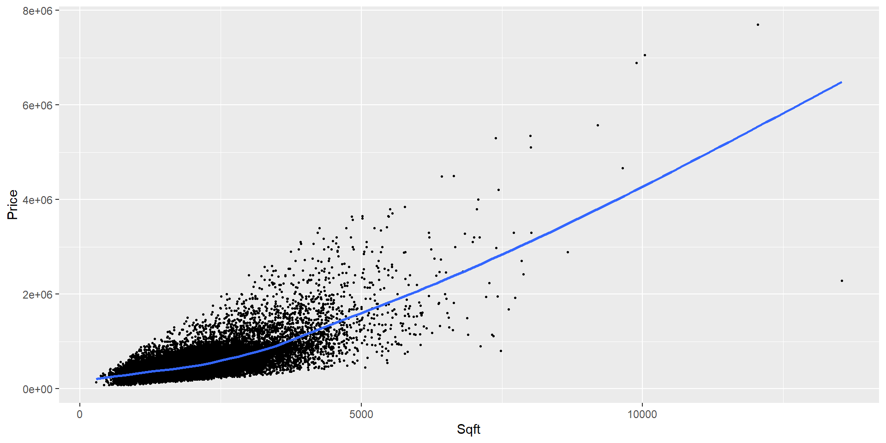
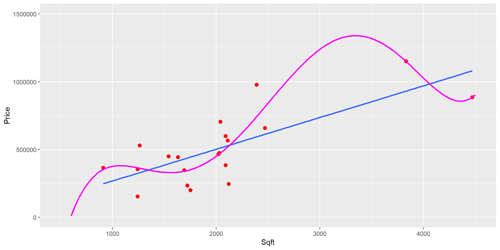
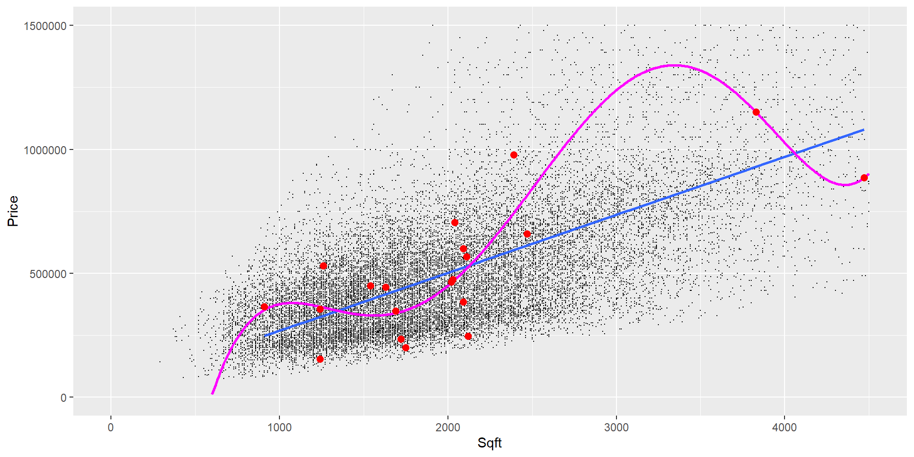
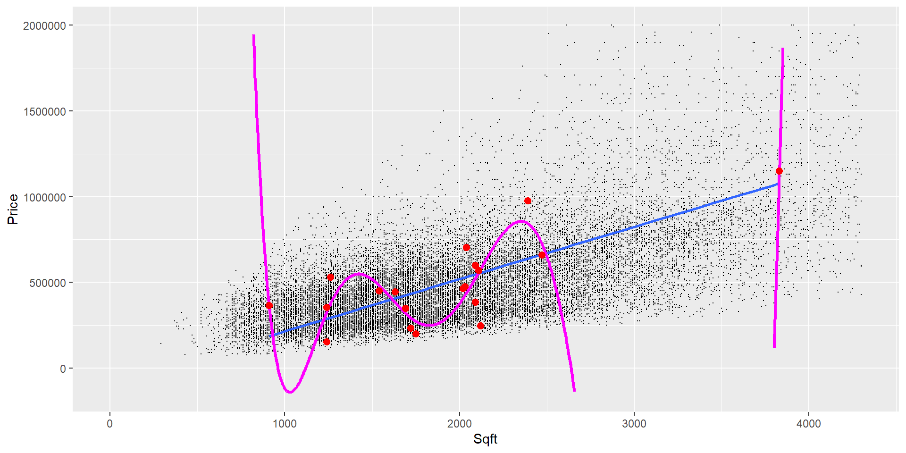
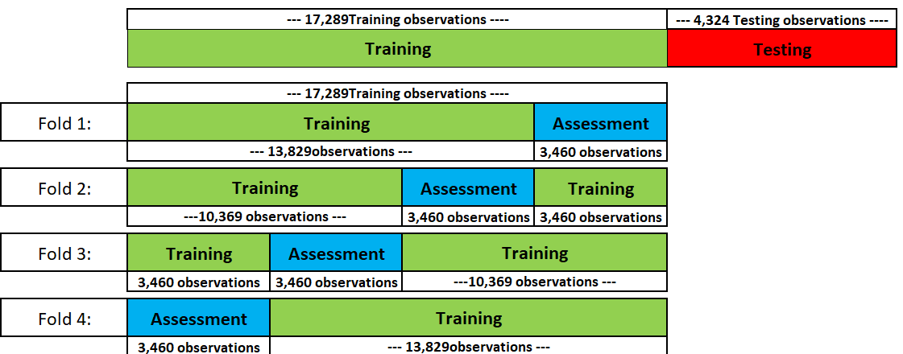
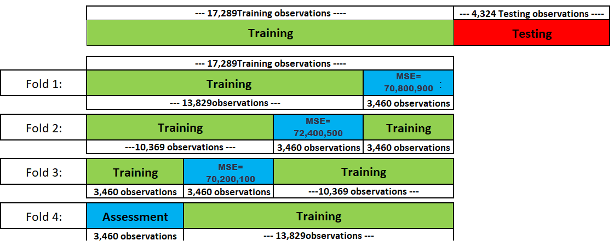
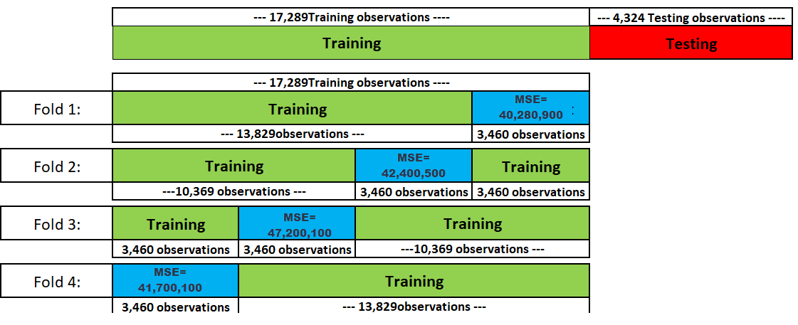

These slides are interactive and must load a full version of R plus some packages. Please wait until complete (see the lower right corner of the screen for progress)
You will learn about:
Overfitting in detail.
Circumstances that make overfitting more likely to occur.
Consequences of overfitting when predicting new data.
Hyper-parameter tuning to avoid overfitting.
Overfitting occurs when a model performs well approximating the training data but does not perform well when it faces new data to predict outcomes (e.g., testing data).
Overfitting is one of the most pressing and still not fully solved problems in machine learning.
If the training dataset does not have a sufficient number of observations.
If the model considers many variables and thus contains many parameters to calibrate.
If the underlying machine learning model is highly non-linear leading to a highly flexible prediction function.
Libraries Loaded:
King County Real Estate Dataset:
Price Sqft
1 221900 1180
2 538000 2570
3 180000 770
4 604000 1960
5 510000 1680
6 1230000 5420There seems to be a non-linear trend:

We want to demonstrate overfitting. Therefore, we create conditions that likely trigger overfitting:
Very small training dataset with 20 observations (equivalent to 0.1% of total observations). The remaining 21,593 observations become testing data.
Highly non-linear machine learning model: Degree-5 Polynomial Regression Model
Polynomial Univariate Prediction Equation (Degree 1): \[ \widehat{Price}=\beta_1 Sqft+\beta_2 \]
Polynomial Univariate Prediction Equation (Degree 5):
\[ \widehat{Price}=\beta_1 Sqft+\beta_2 Sqft^2+\beta_3 Sqft^3 +\beta_4 Sqft^4+\beta_5 Sqft^5+\beta_6 \]
Polynomial Univariate Prediction Equation (Degree 1): \[ \widehat{Price}=\beta_1 Sqft+\beta_2 \]
\[ \widehat{Price}=234 \cdot Sqft+34732 \]
Polynomial univariate prediction equation (degree 5):
\[ \widehat{Price}=\beta_1 Sqft+\beta_2 Sqft^2+\beta_3 Sqft^3 +\beta_4 Sqft^4+\beta_5 Sqft^5+\beta_6 \]
We create \(Sqft^2\), \(Sqft^3\), \(Sqft^4\), and \(Sqft^5\) as new variables in the data and treat them as they were separate variables in a multivariate regression.
This makes the regression linear in variables but non-linear in data.
Consequently, we can use OLS to find the optimal \(\beta s\).
Degree-5 Polynomial Regression equation: \[ \widehat{Price}=\beta_1 Sqft+\beta_2 Sqft^2+\beta_3 Sqft^3+ \beta_4 Sqft^4+\beta_5 Sqft^5+\beta_6 \]
\[ \begin{align} \widehat{Price}=& 10573 \cdot Sqft + (-11) \cdot Sqft^2 + 0.0053 \cdot Sqft^3 + \\ & (-0.0000011) \cdot Sqft^4 + 0.000000000086 \cdot Sqft^5 + (-3336064) \end{align} \]
Regular OLS:
Polynomial Regression (Degree=5)
Code to compare is linked in the footer of this slide.
Regular OLS:
Polynomial Regression (Degree=5)
Code to compare is linked in the footer of this slide.


\[\widehat{Price}=\beta_1 Sqft+\beta_2 Sqft^2+\beta_3 Sqft^3 + +\beta_4 Sqft^4 +\beta_5 Sqft^5 +\beta_{6}\]

\[\widehat{Price}=\beta_1 Sqft+\beta_2 Sqft^2+\beta_3 Sqft^3 + \cdots +\beta_{10} Sqft^{10}+\beta_{11}\]
If we do not have enough data Polynomial Regression with a high degree might lead to overfitting
What is the right degree?
We could try different degrees (e.g., 2, 3, 4, … 10) and see which model performs best.
Which data are we using to measure performance?
We could split off data from the training dataset (validation data). These validation data are not used to calculate the βs. Instead, they are used to find the best setting for the degree of polynomial regression (aka hyper-parameter of polynomial regression).
Hyper-Parameters are parameters other than the \(\beta\) parameters, because they can not be optimized by the optimizer.
Hyper-Parameters are like settings for a machine learning model such as the number of polynomials (e.g., \(Sqft^N\)) to be considered for polynomial regression. Another example are the number of \(k\) Nearest Neighbors.
Hyper parameters often make a model more or less complex and thus influence the quality of predicting but also the chance of overfitting.
Reduces data left over to train (finding optimal βs).
If the training dataset is big enough this is no problem. Otherwise, it is a problem!
For each hyper-parameter setting:
Splits off validation data from training data (e.g. last quarter)
Runs the model and calculates metrics based on validation data.
Splits off validation data from training data (next quarter)
Repeats steps 2 – 3 four times.
We end up with four results for each hyper-parameter setting. We calculate the average of the four results as an result for that specific hyper parameter.
What follows is a mock-up Cross-Validation for the King County real estate dataset.
We try out three hyper-parameter values for the degree of the polynomial regression.
degree 2:
\[\widehat{Price}=\beta_1 Sqft+\beta_2 Sqft^2+\beta_3\]
degree 3:
\[\widehat{Price}=\beta_1 Sqft+\beta_2 Sqft^2+\beta_3 Sqft^3 + +\beta_4\] degree 5:
\[\widehat{Price}=\beta_1 Sqft+\beta_2 Sqft^2+\beta_3 Sqft^3 + +\beta_4 Sqft^4 +\beta_5 Sqft^5 +\beta_{6}\]


\[MSE_{degree=2}= \frac{70,800,900+72,400,500+70,200,100+68,480,100}{4}= 70,470,400\]
\[MSE_{degree=3}= \frac{60,700,900+62,200,500+67,200,100+61,100,100}{4}= 62,800,400\]

\[MSE_{degree=5}= \frac{40,280,900+42,400,500+47,200,100+41,700,100}{4}= 42,895,400\]
degree 2:
\[\widehat{Price}=\beta_1 Sqft+\beta_2 Sqft^2+\beta_3\]
\[MSE_{degree=2}=70,470,400\]
degree 3:
\[\widehat{Price}=\beta_1 Sqft+\beta_2 Sqft^2+\beta_3 Sqft^3 + +\beta_4\]
\[MSE_{degree=3}=62,800,400\]
degree 5:
\[\widehat{Price}=\beta_1 Sqft+\beta_2 Sqft^2+\beta_3 Sqft^3 + +\beta_4 Sqft^4 +\beta_5 Sqft^5 +\beta_{6}\]
\[MSE_{degree=5}=42,895,400\]
The 10 general steps are:
Generating training and testing data with initial_split(), training(), testing()
Create recipe to determine predictor and outcome variables. Optionally add one or more step_X() commands. If needed, mark parameters to be tuned with tune()
Create model design. If needed, mark parameters to be tuned with tune()
Create workflow with workflow(), add_recipe()andadd_model()withoutfit()`
Create a hyper-parameter grid containing the hyper-parameter combinations to be validated
Create cross validation datasets (aka resamples) containing the folds (use command vfold())
Tune the machine learning model with tune_grid() and track specific metrics defined by metric_set(). Runs all hyper-parameter combinations for all folds.
Extract the best hyper-parameter combination from the tuning results based on selected metrics (use select_best())
Finalize the model by training it with the full set of training data with the best hyper-parameter combination (see finalize_workflow() |> fit()).
Assessing predictive quality of the final model by using the testing dataset to predict (see augment() |> metrics()).
Code to run all 10 steps is linked in the footer of this slide.
Use k-Nearest Neighbors to estimate the color of a wine
Click the link in the footer of this slide to start the exercise.
Click the link in the footer of this slide to download a skeleton of the R script for the research project.
See: Research Project